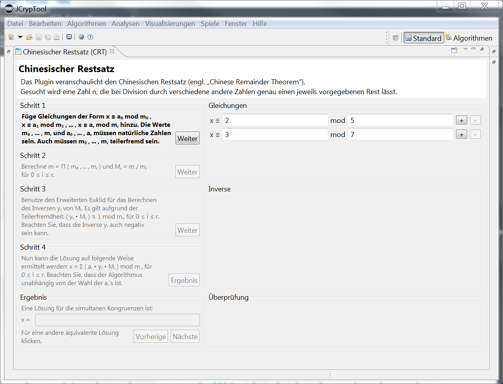

(oben rechts) kann man das Plugin in den Initialzustand versetzen.
(oben rechts) kann man das Plugin in den Initialzustand versetzen.Dieses Plug-in demonstriert die Funktionsweise des Chinesischen Restsatzes (englisch Chinese Remainder Theorem, abgekürzt CRT).
Der CRT-Algorithmus selbst ist hier beschrieben.
Das CRT-Plug-in lässt sich über das Menü Visualisierungen starten. Seine Ansicht lässt sich maximieren, und mit der Neustart-Ikone (oben rechts) kann man das Plugin in den Initialzustand versetzen.

Das Plug-in gliedert sich in zwei Spalten: Auf der linken Seite werden die Berechnungsvorschriften der Schritte erläutert, und auf der rechten Seite werden die Eingabefelder und Ergebnisse der Berechnung angezeigt. In der Gruppe Gleichungen auf der rechten Seite des Plug-ins können die Parameter der Gleichungen eingegeben werden.

Dabei können positive ganze Zahlen beliebiger Größe verwendet werden. Durch Drücken des + Buttons kann die Anzahl der Gleichungen erhöht und mit dem - Button kann sie verringert werden. Es werden mindestens zwei Gleichungen benötigt. Nach Festlegung der Anzahl der Gleichungen und Eingabe der Parameter kann man durch Betätigen des Buttons Weiter zum nächsten Schritt übergehen.
Falls die Eingabeparameter der Gleichungen nicht korrekt waren, erscheint ein Dialogfenster.
In diesem Dialogfenster hat der Benutzer die Möglichkeit, die Eingabe selbst zu korrigieren oder sich durch den Button Vorschlag einen gültigen Wert vom Programm vorschlagen zu lassen. In beiden Fällen muss der Benutzer die Eingabe mit dem Button Übernehmen bestätigen. Mit dem Ok-Button kehrt der Benutzer zum Programm zurück und das Dialogfenster schließt sich. Die Gruppe Schritt 2 wird aktiviert und die darin enthaltene Berechnungsvorschrift wird hervorgehoben.
Der Benutzer kann nun durch Drücken auf Button Weiter zum dritten Schritt wechseln. In der Gruppe Inverse werden die Zwischenergebnisse der Berechnung angezeigt. Die dazu gehörige Erklärung ist zuvor in der Schritt 2-Gruppe gegeben worden.
Gruppe Schritt 3 beschreibt die Berechnung des inversen Elements.
Der nächste Schritt, Schritt 4, wird ebenfalls in der Gruppe Inverse dargestellt.
Die Berechnung des Endergebnisses ist im letzten Schritt, Schritt 4, beschrieben.
Das Endergebnis kann nun durch Drücken des Ergebnis-Buttons in der Gruppe Überprüfung angezeigt werden.
Damit der Benutzer sich von der Richtigkeit der Lösung überzeugen kann, werden in der Überprüfung-Gruppe alle Gleichungen noch einmal dargestellt.
Der Benutzer kann sich nun durch Klicken auf die beiden Buttons Nächste und Vorherige weitere Lösungen der simultanen Kongruenzen anzeigen lassen. Dabei werden die Lösungen sowohl in der Ergebnis- als auch in der Überprüfung-Gruppe dargestellt. Um eine neue Berechnung zu initiieren reicht es, wenn man in der Gleichungen-Gruppe auf den + oder - Button klickt. Dadurch wird ein Reset der Eingabefelder bis auf diejenigen in der Gleichungen-Gruppe durchgeführt und man kann weitere Gleichungen hinzufügen oder entfernen. Dieser Reset ist von jedem Schritt aus möglich.
Nach Durchlauf des Algorithmus ist es möglich, die Berechnung zu exportieren. Das Plug-in unterstützt dabei die Ausgabe als LaTeX-, PDF- oder CSV-Datei.